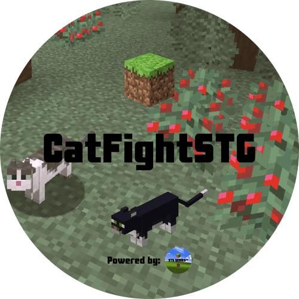

Survival chaos
Cats pick fights on their own — configurable range, cooldowns, and who can join in (tamed, kittens, sitting cats).

Paper port of Chesy’s Cat Fighting — nearby cats quarrel with hisses, particles, and swipes. Fights are visual only (no real cat damage). Flatten cats with a shovel or a minecart. Vanilla clients work as-is.
Cats pick fights on their own — configurable range, cooldowns, and who can join in (tamed, kittens, sitting cats).
Face-to-face swipes and knockback on the ground — no clipping piles, no flight, and no actual cat-vs-cat damage.
Shovel or moving minecart to flatten; shovel again, sneak + empty-hand click, or /catfighting unflatten to pop them back.
Built for Paper 1.21.11 — download from CurseForge or GitHub Releases.
Do not drop the original Fabric/Forge mod jar in plugins/ — use the Paper plugin build.